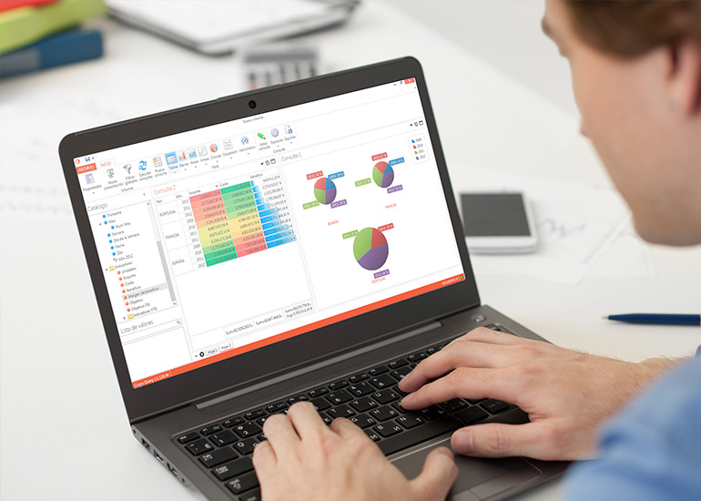

Ten tu empresa al día
Descarga la versión de evaluación para comprobar lo sencillo que resulta controlar tus indicadores de negocio. Crono es una aplicación moderna y potente ypuede ayudarte tanto si quieres analizar las ventas, los stocks, la rentabilidad o cualquier otro KPI de tu negocio.
